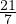
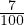

Terviku leidmiseks protsendi järgi on mitu meetodit:
Näiteks, kui on teada, et 7% on 21, siis terviku leidmiseks leiame kõigepealt 1%
väärtuse. Selleks  = 3 ja seega vastab 1% arv kolm. Nüüd korrutame kolme sajaga
3 ⋅ 100 = 300 ja saame terviku.
Kasutades teist meetodit, teisendame 7% kümnendmurruks ja jagame 21 saadud
kümnendmurruga. Seega 7% =  ja